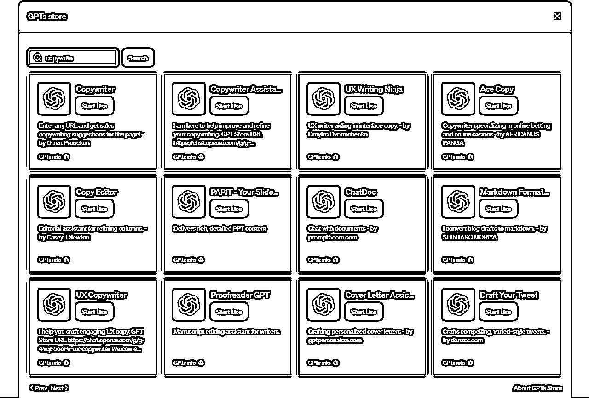
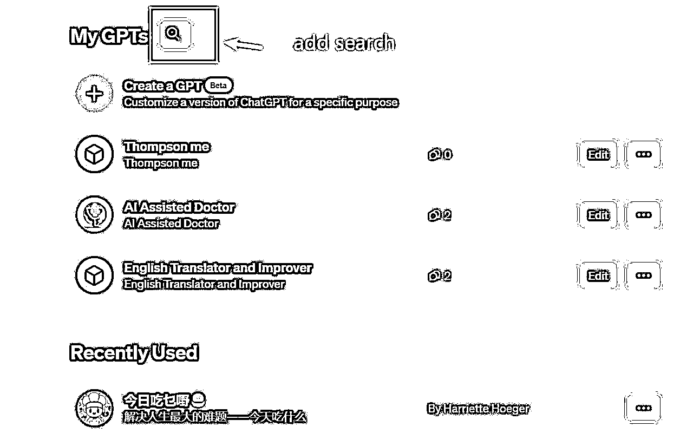
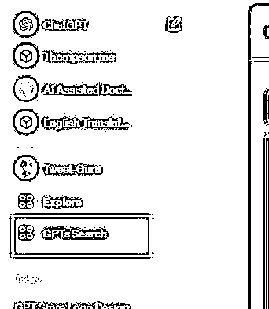
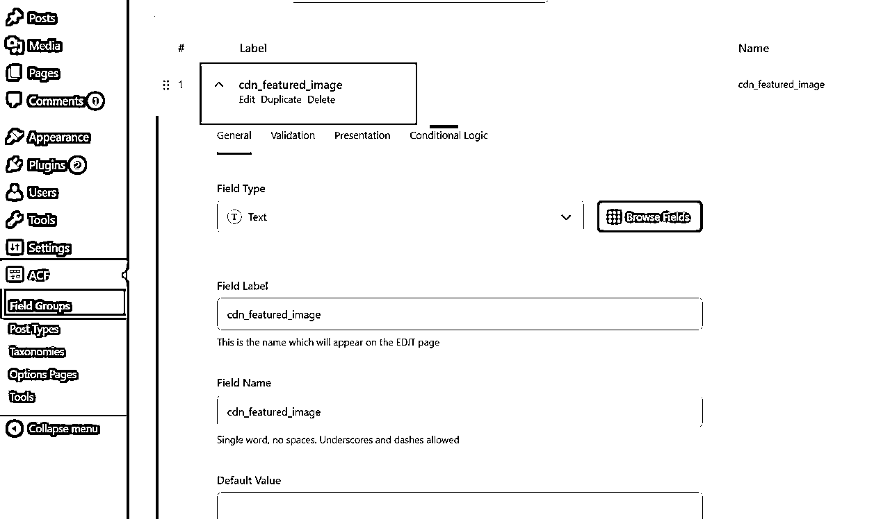

来源：https://gczff68td0.feishu.cn/docx/QCVedXi6FozStFxDZqjcVDh1nVf



这里需要批量导入已经爬取的 gpts 信息，然后组装成文章保存到 WordPress，可以借助 WordPress API 来实现这个目标。下面是一个简要的步骤指南：
1. 安装并配置 JWT Authentication for WP-API 插件
首先，在您的 WordPress 站点中安装并激活 "JWT Authentication for WP-API" 插件。这个插件将帮助您生成用于访问 WordPress API 的令牌（token）。
2. 获取令牌（Token）
通过以下请求获取令牌：
请求 URL: https://yourdomain.com/wp-json/jwt-auth/v1/token
请求主体（Body）：
https://yourdomain.com/wp-json/jwt-auth/v1/token
{
"username": "wordpress_username",
"password": "wordpress_password"
}
响应将包含您的令牌，例如：
{
"token": "xxx",
"user_email": "xxx@x.com",
"user_nicename": "xxx",
"user_display_name": "xxx"
}
由于您需要使用第三方图片地址作为封面图，您需要添加一个自定义字段。为此，您可以使用 "Advanced Custom Fields" 插件，它允许您轻松创建自定义字段。
https://www.advancedcustomfields.com/
在插件安装后，创建一个新的自定义字段，以存储第三方图片地址，例如命名为 "cdn_featured_image"。

WordPress 自定义字段默认不支持通过 API 进行保存。要使其支持 API 插入，您需要在主题的 functions.php 文件中添加一些代码。请在主题的 functions.php 文件末尾添加以下代码，其中 "cdn_featured_image" 是您创建的自定义字段名称：
function custom_register_post_meta() {
register_post_meta('post', 'cdn_featured_image', array(
'show_in_rest' => true,
'single' => true,
'type' => 'string',
));
}
add_action('init', 'custom_register_post_meta');
以下是一个 Python 脚本示例，演示如何使用令牌和 API 来插入或更新文章：
import requests
import json
import datetime
gloab_your_jwt_token = "xxxx"
def create_wordpress_post(post_id, title, content, categories, tags,base_url, featured_media_image_url,download_link,custom_properties, your_jwt_token):
if your_jwt_token is None:
your_jwt_token = gloab_your_jwt_token
url = f'{base_url}/wp-json/wp/v2/posts'
if post_id is not None:
url = f'{base_url}/wp-json/wp/v2/posts/{post_id}'
current_datetime = datetime.datetime.now()
yesterday = current_datetime - datetime.timedelta(days=1)
formatted_datetime = yesterday.strftime('%Y-%m-%dT%H:%M:%S')
# 要插入的Post数据
postDict = {
"title": title,
"content": content,
"date": formatted_datetime,
"status": 'publish',
"format": 'standard',
"categories": categories,
"meta":{}
# TODO: featured_media, excerpt
}
# 更新的话，不更新时间
# if post_id is None:
# postDict["date"] = formatted_datetime
if tags and len(tags)>0:
postDict["tags"] = tags
# 判断featured_media_image_url是否为空
if featured_media_image_url and featured_media_image_url != 461:
# 如果featured_media_image_url不为空，将其作为自定义字段加入到meta中
postDict["meta"]["cdn_featured_image"] = featured_media_image_url
else:
# 如果featured_media_image_url为空，将featured_media设置为201
postDict["meta"]["featured_media"] = 461
if download_link and download_link != '':
# 如果 download_link 不为空，将其作为自定义字段加入到meta中
postDict["meta"]["download_link"] = download_link
curHeaders = {
"Authorization": "Bearer %s" % your_jwt_token,
"Content-Type": "application/json",
"Accept": "application/json",
}
# print(postDict)
# 发送POST请求
response = requests.post(
url,
headers=curHeaders,
json=postDict,
)
# 检查响应状态码
if response.status_code == 200 or response.status_code == 201:
print('Post创建或者更新成功！')
else:
print(f'Post创建或者更新失败，状态码：{response.status_code}')
print(response.json())